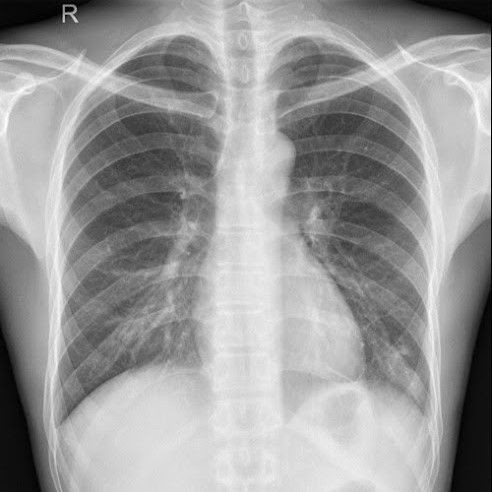
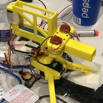
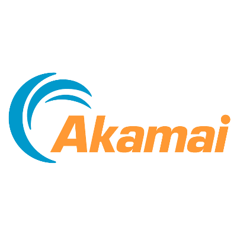

Avi Komarlingam
Backend Developer & Machine Learning Architect
About Me

Sophomore - University of Maryland, B.S in Computer Science and Mathematics
I'm Avi, a 20 year old computer scientist based in Northern Virginia. I've been coding for around 4 years and have gained experience in several fields such as machine learning, application development, web development, and data science. I am a first semester sophomore at the University of Maryland, and my current courseload includes Introduction to Computer Systems, Advanced Calculus 1, and Introduction to Design and Quality. During my free time, I like to play sports such as Basketball and Spikeball, watch movies with friends, and play videogames.
My Skills
Python
GoLang
Java
Node.JS
SQL
C
Personal Projects
TripleNet

VestaAIO
Midas
BALLOONS

NitrateX

Akamai Antibot Solution
